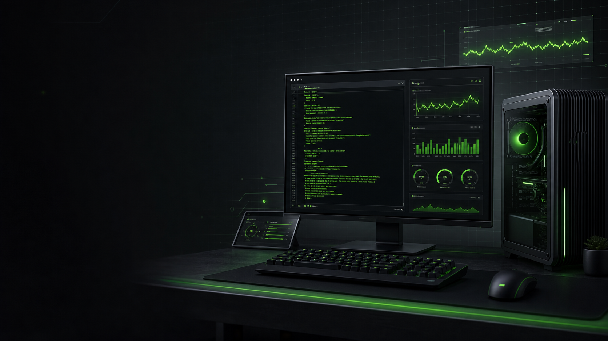

Safe
Backup and restore point
Create a Windows restore point and export key registry areas before tuning.
1 backup\create-backup.ps1

A source-cited toolkit for Windows 11 performance tweaks, gaming latency checks, clean driver paths, and aggressive opt-ins with a clear revert contract.
cd "<path-to-repo>"; .\launcher.ps1
Run one guided menu instead of guessing which script to start with.
Advanced changes capture pre-toolkit state before they mutate Windows.
Anti-cheat, reboot, disk, and security impact are called out before you run.
Start with the launcher unless you already know the exact phase you want. The aggressive full-stack apply exists, but it is not the default recommendation.
Recommended first run
The launcher checks admin state, shows the current manifest status, and lets you run backup, verify, apply, revert, or individual tweak categories.
cd "<path-to-repo>"
.\launcher.ps1Filter by risk tier and use the paired restore scripts when you are testing one change at a time.
Create a Windows restore point and export key registry areas before tuning.
1 backup\create-backup.ps1
Read-only checks for pagefile, DirectStorage, polling rate, MSI mode, RAM, CPU, and GPU.
12 hardware\check-*.ps1
Performance power plan, service trimming, startup delay, and background task cleanup.
2 power plan\configure-power.ps1
Driver install helpers, MSI mode, ReBAR checks, NVIDIA P0, and AMD ULPS opt-ins.
6 gpu\install-gpu-driver.ps1
Adapter power settings, RSS tuning, RSC, interrupt moderation, DNS, and Nagle-related flags.
7 network\optimize-network.ps1
Opt-in scripts for VBS, HVCI, LSA protection, DEP, Defender, and Spectre/Meltdown toggles.
8 security vs performance\configure-vbs.ps1
The toolkit is built for people who want performance knobs without black-box behavior. Every meaningful mutation is paired with a restore path, source context, and risk label.
Do not start with Apply Everything on a school, work-managed, or mission-critical PC.
Gaming laptops, hybrid GPUs, and anti-cheat-heavy setups deserve slower changes.
If a change hurts stability, use the paired restore script or REVERT-EVERYTHING.ps1.
Tracked registry and service writes are captured under ProgramData before mutation.
Headers point to Microsoft Learn, vendor docs, or upstream project context.
Third-party tools are downloaded at runtime and verified by SHA-256.
Security and anti-cheat implications are visible before you run the risky path.
Run .\launcher.ps1 from Administrator PowerShell, then use [V] verify and the backup path before applying changes.
It is aggressive by design. Use it only after reading the guide and understanding the Security Trade-off scripts.
Use paired restore scripts for individual tweaks or .\REVERT-EVERYTHING.ps1 for the manifest-driven rollback path.
No. The toolkit is developed here, but runtime testing must happen on Windows 11 with the manual checklist.